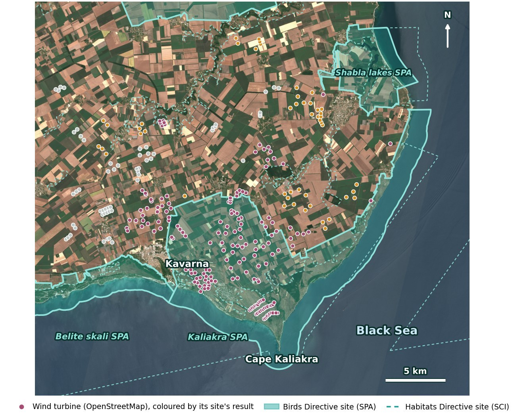
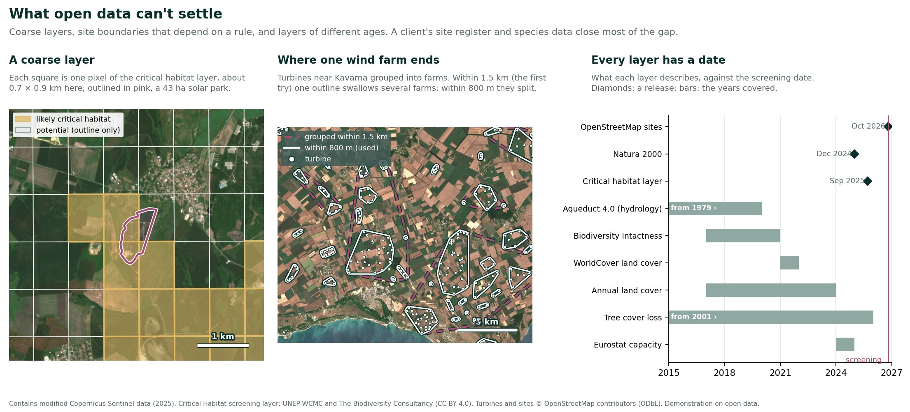

In preparation. This sample is being built: the dashed boxes describe what is coming. Check back soon.
A lender is asked to finance a wind farm on Bulgaria's Black Sea coast, near Cape Kaliakra. Before the critical habitat assessment, the first questions of IFC Performance Standard 6 and EBRD Performance Requirement 6 are: is the land natural or modified habitat, could it be critical habitat, and is it in a legally protected or internationally recognised area? What can open data answer, and where does it stop?
Kaliakra is a known case. In 2016 the EU Court of Justice found that Bulgaria had left part of the Kaliakra important bird area out of the protected site and had approved wind farms in it. For many sites at once, see the portfolio screening for nature disclosures in Bulgaria and Portugal.

The Kaliakra coast on Sentinel-2, 25 June 2025, with the wind turbines in OpenStreetMap and the Natura 2000 sites.
The opening figure redrawn around the chosen wind farm: its turbines and area of influence, natural and modified habitat from Sentinel-2, and the protected sites around it.
Natural or modified: hectares of each within the wind farm and its area of influence, before and after construction.
What the protected sites are for: the species and habitats the nearby Natura 2000 sites are designated for, from their Standard Data Forms.
The five criteria: for each critical habitat criterion, what open data says, what it can't say, and what the assessment would need.
Checked against what was decided: the result compared with the project's published environmental documents.
The case: one of the wind farms between Kavarna and Cape Kaliakra whose environmental documents are public, ideally a lender's disclosure, so the pre-screening can be compared with a real assessment. To be chosen and confirmed at the start of step 2.
IFC Performance Standard 6 tells modified habitat from natural habitat, and sets stricter rules for critical habitat, which can be either. A project can't significantly convert or degrade natural habitat unless, among other conditions, there is no viable alternative and the losses are mitigated, and in critical habitat it has to show, among other things, net gains for the features that make it critical. EBRD Performance Requirement 6 sets out the same idea with its own terms. So the lender's first desk questions are what the land is, what lives there that matters, and which protected or recognised areas are nearby.
Critical habitat is defined by five criteria: habitat of significant importance to Critically Endangered or Endangered species; to endemic or restricted-range species; to migratory or congregatory species; highly threatened or unique ecosystems; and areas associated with key evolutionary processes. A layer overlay can say a site is near something; it can't go through these one by one.
The portfolio screening for Bulgaria flags 19 of the 21 wind sites within 1 km of the Kaliakra Birds Directive site as "assessment likely", and the other 2 for a check. This can't serve as a check on the screening, because it can't fail: a site inside or next to the protected area is flagged by the rule itself.
The court case was about something an overlay of protected areas can't see: the part of the important bird area left outside the protected site. Important bird areas are key biodiversity areas, and their boundaries sit behind a licence that doesn't allow this use. The critical habitat screening layer stands in for them at about 1 km, which is coarse beside a single wind farm.

A coarse layer, a boundary that depends on a rule, and layers of different ages.
An honest test instead of the circular one: the pre-screening's answer for the chosen wind farm compared with what its published environmental documents concluded about critical habitat and birds. Where they differ, the page says why.
A map of natural habitat (steppe grassland, shrub, woodland, wetland, coastal cliffs) and modified habitat (arable, built-up, roads) on the wind farm and in its area of influence, from the Sentinel-2 record before and after construction, with the annual land cover maps as a second opinion.
Classed field by field from the seasonal record, as in the habitat pre-map sample: arable land shows bare soil every year, steppe grassland never does. Checked on random points against Sentinel-2 views, with an accuracy table.
Headline: hectares of natural habitat inside the footprint and the area of influence, and how much of it was lost or gained since construction.
For each Natura 2000 site within reach of the wind farm, the species and habitats it is designated for, from its Standard Data Form (European Environment Agency): birds under the Birds Directive, other species and habitat types under the Habitats Directive, with their status at the site.
Those species looked up in the IUCN Red List categories, to see which could trigger the first and third criteria (threatened species; migratory or congregatory species).
The European Environment Agency's distribution grids from the Member States' reports under Article 12 of the Birds Directive and Article 17 of the Habitats Directive: which listed species and habitat types are recorded in the 10 km squares around the site. They are coarse, but open, and they partly stand in for the species data that sit behind licences.
For wind, the place on the Via Pontica, one of Europe's main bird migration routes along the western Black Sea coast, with its source.
| Criterion | What open data says | What it can't say | What the assessment needs |
|---|---|---|---|
| 1. Critically Endangered or Endangered species | Step 2 | Step 2 | Step 2 |
| 2. Endemic or restricted-range species | Step 2 | Step 2 | Step 2 |
| 3. Migratory or congregatory species | Step 2 | Step 2 | Step 2 |
| 4. Highly threatened or unique ecosystems | Step 2 | Step 2 | Step 2 |
| 5. Key evolutionary processes | Step 2 | Step 2 | Step 2 |
| Legally protected and internationally recognised areas | Step 2 | Step 2 | Step 2 |
Each row will give its sources and distances. The table is shaped to drop into the critical habitat section of an environmental and social assessment, as the starting point for the specialist.
Whether the site is critical habitat is for the assessment to decide, with species data and field survey.
Grouping turbines within 1.5 km joined the wind farms around Kavarna into one 6,000 ha site, so turbines 8 km from the bird area were flagged along with it. The map showed it, and the published 800 m replaced it. The first screening flagged almost every site in Bulgaria, because potential critical habitat covers most of the lowlands; it is now reported, not flagged. And the Kaliakra "known case", first shown as a check, turned out to be circular; it is now treated as a limit of the overlay.
The scripts were written with an AI agent and checked as described here; how I work with AI on GIS.
A lender-style pre-screening note for the wind farm (PDF), and the habitat map, the species and habitat lists and the criteria table (GeoPackage, CSV).
If you are financing or advising on a project that needs a first look against IFC PS6 or EBRD PR6, email me at ana@timebooster.ai.